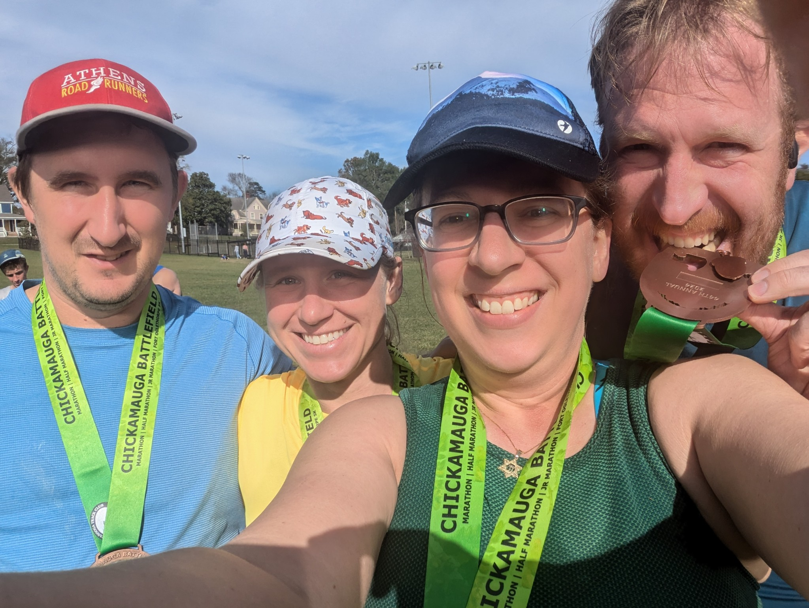
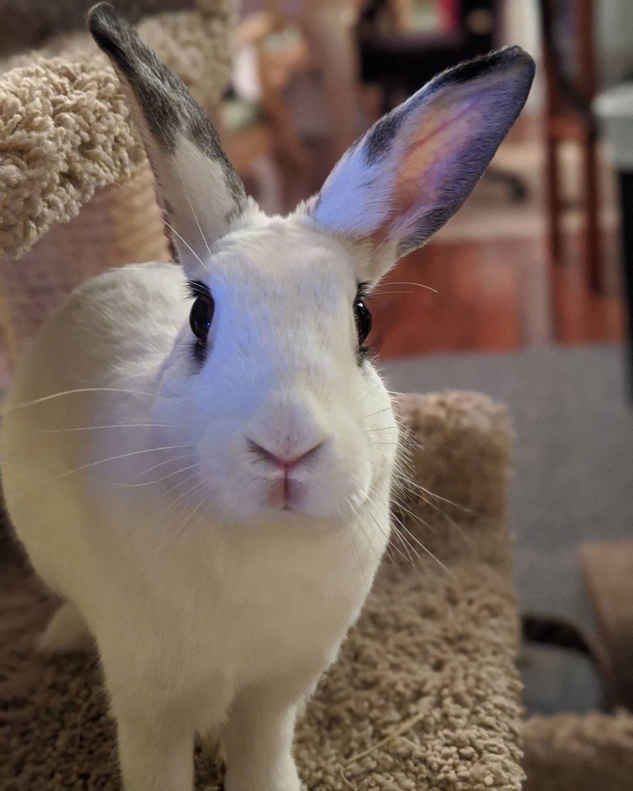

Content warning: language, discussion of mental health struggles, and pet death.
I’ve been thinking a lot about “agency” this year, and how the lack thereof underlies so much of what I’ve been struggling with the past several years. Arguably it’s been my singular source of burnout, and is my focus for 2025.
Work
I realize I haven’t really posted much work stuff here, despite saying I would in previous posts. Work has easily been the single greatest source of stress for me over the past decade, in no small part because it has embodied my lack of agency, starting—frankly—all the way back when I was initially offered the position at UGA.
This past year, I worked as a “Principal AI/ML Scientist” with a small, Pittsburgh-based biotech startup called PredxBio. I was officially on sabbatical with UGA, though my intention at the time was to leave UGA entirely sometime during 2024. Unfortunately, 2023-2024 have been extremely rough years for not-FAANG tech companies, startups in particular. Sometime in the summer, the CTO informed me that things were looking bleak funding-wise. So I started laying some other groundwork (I’ll come back to this in a minute).
PredxBio is, professionally, hands-down the most fun I’ve had in the last 10 years. I worked with a small but incredibly talented and dedicated team on both the science and engineering around a niche but fast-growing area called “spatial biology.” In practice, I helped bring some industry-standard development practices to their existing spatial proteomics pipeline, refactoring some years-old code which led to (I kid you not) a 1000% increase in performance—an operation which took two days was reduced to 30 seconds. I also dove into the (very cool) scverse ecosystem and created the company’s first spatial transcriptomics pipeline. I was in the middle of working on a project for a client that would actually combine the proteomics and transcriptomics pipelines—become truly multiomics—when the year ended. It’s an incredible project, with incredible people, and I’ve been mourning having to leave since November.
Now, enter said groundwork. For most of the summer, I spoke with the unit heads of both the UGA Institute of Bioinformatics (IOB) and Department of Cellular Biology, the latter of which is already one of my home units. I pitched, and was eventually able to land, a change in my “home unit” assignment: rather than being split between Computer Science and Cellular Biology, I will zero out Computer Science and move that affiliation over to IOB. There are a lot of reasons for this, both personal and professional, but it boils down to agency: I wanted to build a role that I could get excited about, where I could pursue computational biology questions that excited me, both in the classroom and the laboratory, while working with colleagues and students who were likewise excited and supportive.
I’ve gotten everything out of Computer Science that I can, and it’s gotten more than its fair share out of me. This is an opportunity of my own making—of course, done in collaboration with people I couldn’t have done it without, and with whom I hope to continue collaborating as fruitfully for years to come. But unlike when I first accepted the CS position over a decade ago, I not only voiced my concerns and requests, but stood by them until we reached a consensus based on mutual understanding.
Even better: I’m planning to continue consulting one day per week with PredxBio (as per my right as faculty), with the plan/hope that, if all goes well financially over the next few months, I’ll return to full-time over the summer. In my dream scenario, I’m also planning to submit an R01 grant that names PredxBio as a chief collaborator; if funded, this would solidify our professional relationship for at least the next five years, and give both of us the financial and logistical flexibility to continue working together. It’d even open up a recruiting avenue if PredxBio needs to start hiring (definitely a longer term plan!), so I’m really crossing my fingers here.
Suffice to say, I’m trying to create something that actually gets me out of bed in the mornings. The perfect antidote to burnout, or at least the next step in healing. Rather than stumbling from one five-alarm fire to the next, I’m trying to be intentional.
Time will tell. But for now, I’m cautiously optimistic.
There is still A LOT I find problematic with academia in general, UGA specifically, and my units in particular. A couple weeks ago I was invited out of the blue to apply for an NIH early career reviewer program, only to have my application desk-rejected after I’d put in a few hours to assemble everything. This past summer, UGA committed the third accounting error in as many years whereby someone up the chain fucked up my financials, but in order to fix it, needed to either nuke my indirect accounts or, in this case, withhold subsequent paychecks to cover the difference (the total amount UGA has fucked me over is now in excess of $130,000, I should add). I just had a conference paper rejected, and the two reviewers’ feedback I received totaled three sentences, all of which were addressed in the paper itself.
These are things I have no control over; raging against them is certainly what I’d like to do, but would ultimately be a waste of time and energy. Like the design of my new role, I need to focus on what I can control in order to create opportunities. So for the time being, I’m keeping one foot in academia.
Running
I’ll go into this more on my running blog (EDIT: here’s the 2024-in-running post, if you’re curious), but since I mentioned it in my 2023 retrospective post, I wanted to say here: not only did I hit 1000 miles this year, I piled on another 70 for good measure. I also hit a week of over 30 miles (once, but still), and the Chickamauga Battlefield half marathon for the first time since 2018 (I ran the full marathon in 2019, so it’d been only five years since going to the actual location for a race).
There’s still a lot to do here—I’m still feeling as though long COVID has its claws in me and I’d really like to get some answers; I’m also frustrated with how I don’t feel as though I’ve gotten any faster this year; long runs in particular have been grueling, and I’m not sure if it’s because of the first item or something innocuous (e.g., I need a better fueling strategy)—but I’m proud of the routines and habits I’ve established, and the space I’ve created for running, and I finally feel as though running is truly part of who I am again.

Personal
This year was… a lot. I go into it quite a bit in this post from the summer: our 9+ year old bunny Clover dying, my parents’ house being broken into, the multiple bullshit accounting mistakes made by UGA which I had to bail them out of, starting back on SSRIs for the first time in several years, parenting a toddler-turned-young-kid, (inter)national politics. To this day, I cannot say which I find more repugnant: RG progressives who have no Middle East connections but suddenly became Middle East geopolitical experts on Oct 8, 2023, yet have been silent ever since; or TG progressives, likewise with no Middle East connections, who have since made the Middle East their entire personalities.
On that note, I’ve also wrestled with a lot of my own inner demons: one of my goals for 2024 to work on my deep-seated anger and resentment. This entailed coming to terms with prior working situations, re-evaluating relationships, and making a whole lot of decisions about what was important enough to continue to make space for, and what needed to be let go. This was as innocuous as deep cleaning our garage and its 10+ years of accumulated stuff when contractors came to install our solar panels + battery setup: a lot of it we could easily part with, but some had pretty deep sentimental value but was otherwise just taking up space. It was also as complicated as relationships that have changed for reasons unknown, and it’s that unknown part that is the most heartbreaking and makes it so difficult to decide one way or the other whether to keep sticking it out; in the end, we need to do what’s best for us.
My wife’s therapist put it nicely: we’re closing the door, but that doesn’t mean they can’t knock on it sometime later, at which point it’s up to us whether we answer.
I’m also working on a mindset shift, one that understands and embraces the truth that current situations are temporary by definition, and I can decide whether I want to tough it out or go try something else. This is a valuable perspective both personally, but also professionally—it underlies all my efforts to create something that excited me: if things are still miserable, I can try something else. Or leave.
I did set up a Signal group chat following the election, full of absolutely wonderful human beings who have easily been the most consistently bright point in the weeks since1. It’s not a large group, just 10 of us (some I haven’t met in person), but we’ve already had some wonderful discussions. It can be more or less summed up by the image I chose as the group avatar. National politics continues to be a shitshow and will likely only get worse over the next four years, but this mindset shift should help. My therapist has always said to lean into worse-case scenarios, not because they’ll necessarily become true, but because we may discover we’re more resilient than we initially thought.
I also assembled the single most powerful desktop I’ve ever built, organized the home upstairs office with a server rack, upgraded our home network with a Firewalla, and have spent the last month making progress on more easily accessible homelab services. We had our nearly-20-year-old roof replaced, had solar panels put on it and backup batteries installed, substantially improved the insulation in our attic space, and are epsilon-away from having a couple of windows replaced to really complete weather-ification.
Summary of 2024
The Good:
- Best professional work experience in 10 years, top to bottom, with PredxBio
- Broke 1000 miles running for the first time since 2019
- Forged a “new” position at UGA for myself starting in 2025
- Set personal and professional boundaries and held them
- Maintained phenomenal consistency with physical activities across the board
- Built some really cool shit
The Bad:
- Mental health struggles, back on medication
- Running speed has not improved in a year
- Still a lot of lingering resentment around some relationships
- Losing our beloved bunny, Clover
The Ugly:
- The fucking election
- Continued fallout from Oct 7, 2023
- Parents’ house being burglarized
- Having contractors in our house sucks; them breaking shit is another level
Plans for 2025
I’m still not making “resolutions” in the traditional sense. As a recent toot made very explicit: “the structure of the exercise is practically designed to set you up for failure” (like some other things of the past few years2). As someone I deeply admire put it: “it is always a wonder how much this [time off] ultimately actually leads to things the world sees as productive….when you make that NOT the goal”.
Nevertheless, my biggest priorities this year are to focus on agency and intentionality: creating opportunities where I can, and walking away when I need to. I created this “new” role for myself at UGA; now I need to commit to doing everything I can to succeed in it. At the same time, I can always tweak things that aren’t working; alternatively, I can walk away entirely. My situation need not be permanent. Change, or choose.
My other plans, in no particular order:
- 1000+ miles running (again), with an emphasis on 100+ mile months, and 30+ mile weeks
- Finish cleaning out the garage, and start in earnest on cleaning out the upstairs
- Keep cultivating new opportunities through consistency and intentionality
- Set and hold boundaries, especially around work/life balance
In my #DecemberAdventure wrap-up post, I laid out the next steps for getting internal/homelab services up and running with their own DNS entries and SSL certificates. I feel reasonably confident about this approach, thanks to some of the groundwork I did last year and especially during #DecemberAdventure. The first step? Completely reformat my Pi cluster and start over!
Happy 2025, everyone. Much love to all.

Footnotes
Citation
@online{quinn2025,
author = {Quinn, Shannon},
title = {Agency},
date = {2025-01-04},
url = {https://magsol.github.io/2025-01-04-agency},
langid = {en}
}